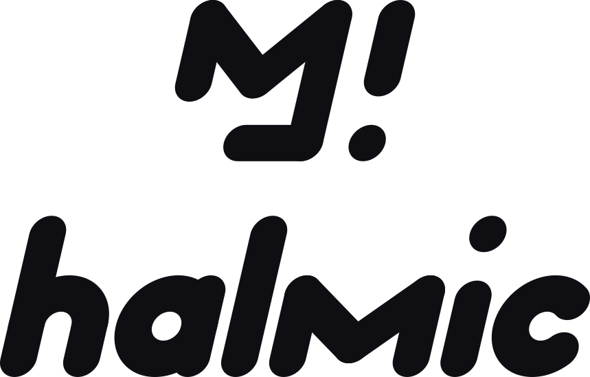
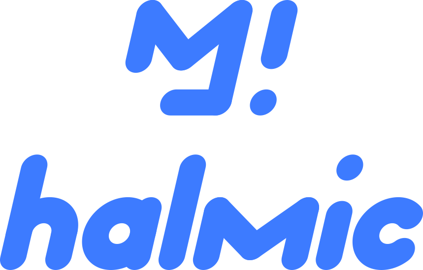
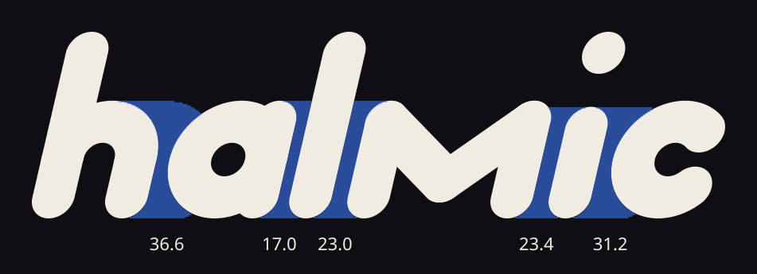
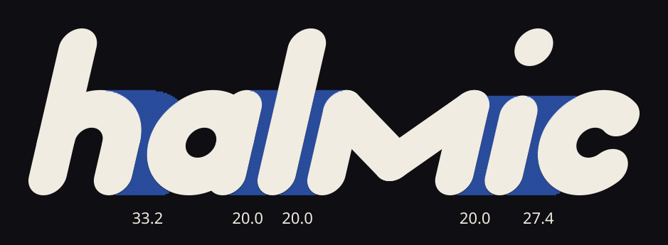
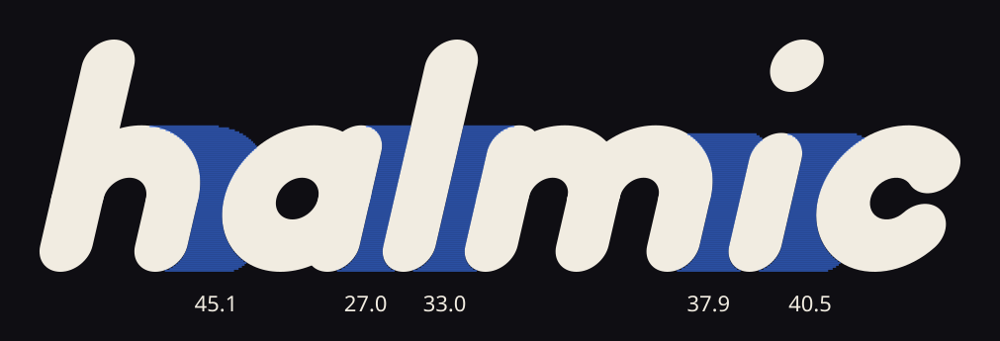
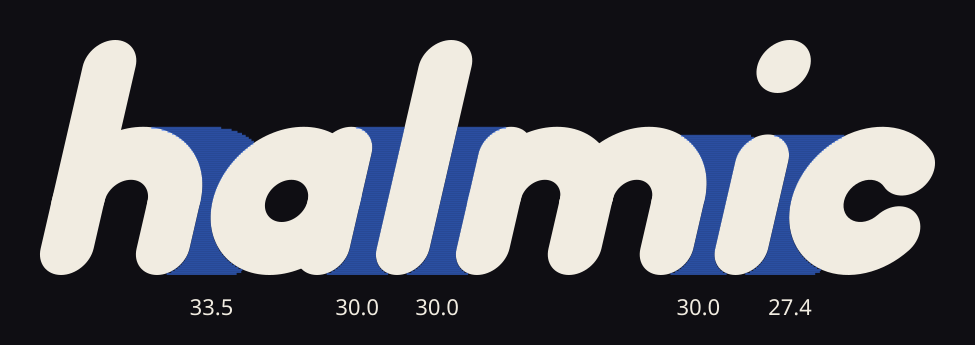
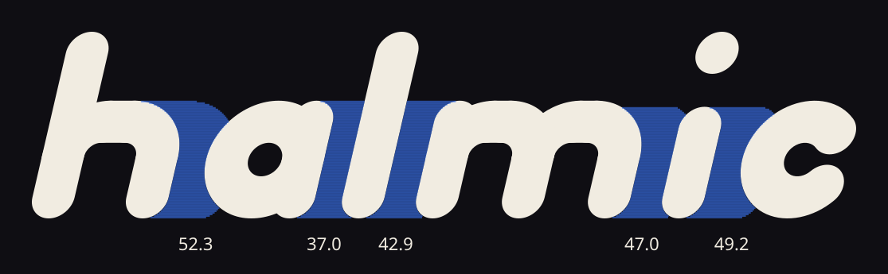
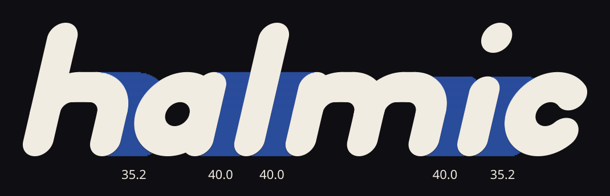

halmic logotype specimen
Generated by build-logotype.mjs from the mark's own geometry: bar thickness 53, full-round caps (radius 26.5), a 13 degree lean, a dot the size of the bar, the long bar (235.02) as ascender, the short bar (148.21) as x-height. Three directions, then the recommended family.
Three directions, light and dark
A, Bar: semicircle arches, the safest read. B, Round: flat stadium shoulders, wider, looser. C, Slash: tight, round h, and an m that is the monogram's M in small (stem, V, stem). Each shown at display size and at 24px and 16px height.

Recommended family (C)
Horizontal lockup at 1:1 with the mark (the bars are literally the same thickness), stacked lockup, and the mark tile for avatars and favicons. Ink on paper, paper on ink, and the accent version (cobalt blue on ink).



Mark tile (avatar, favicon, Twitch profile picture)
The existing mark is untouched: its eight paths are reused as is, centred at 58% of the tile. Shown at 256, 96, 48, 32 and 16px.


Blue
Three blues, each as a pair: a bright one for the ink ground and a deeper one for paper, plus a live tint. All text pairs pass AA (4.5:1). Recommended: cobalt. It reads as blue at small sizes, clears AA on both grounds, and the live state is a brighter tint of the same hue plus motion rather than a second colour.
Spacing proof
Each gap is measured as the mean white per scanline across the x-height band (units: the bar is 53), capped at 70 so deep counters do not dominate, then equalised: straight to straight 1.0, round against a stem 0.88, round to round 0.8, never closer than 12 units anywhere. The blue tint is the measured white; the number under it is the mean. Before is the first-round fixed advance with three hand tweaks.






| mean white per scanline | ha | al | lm | mi | ic | spread |
|---|---|---|---|---|---|---|
| before (fixed advance) | 36.6 | 17 | 23 | 23.4 | 31.2 | 19.6 |
| after (optical) | 33.2 | 20 | 20 | 20 | 27.4 | 13.2 |
| mean white per scanline | ha | al | lm | mi | ic | spread |
|---|---|---|---|---|---|---|
| before (fixed advance) | 45.1 | 27 | 33 | 37.9 | 40.5 | 18.1 |
| after (optical) | 33.5 | 30 | 30 | 30 | 27.4 | 6.1 |
| mean white per scanline | ha | al | lm | mi | ic | spread |
|---|---|---|---|---|---|---|
| before (fixed advance) | 52.3 | 37 | 42.9 | 47 | 49.2 | 15.3 |
| after (optical) | 35.2 | 40 | 40 | 40 | 35.2 | 4.8 |
Lockup distance: the mark-to-word gap uses the same measure with a larger target (2.4 bars of mean white) so it reads as a word space; the mark is not part of the word.
An "h" mark for halmic
Five readings of "the crosshair" are on hmark.html (png). Recommended: 2, h!, which carries the mark's own bar and dot and works at 16px.


Construction

Clear space and minimum size
Clear space on every side is one bar thickness (T = 53 units, which is 22.5% of the lockup height, one dot). Nothing enters it.
- Wordmark alone: never smaller than 20px tall on screen (ascender to baseline), 8mm in print. The 16px row above is the failure case, shown for honesty.
- Horizontal lockup: 28px tall minimum. Stacked lockup: 64px tall minimum.
- Below those, use the mark tile (down to 16px) or the wordmark alone.
- Do not recolour parts, outline, add shadows, change the lean, stretch, or set the wordmark in a different weight. Three colourways only: ink, paper, accent.
- The accent version is for dark grounds (cobalt #3d7bff on ink); on paper use the deeper blue #1d4fe0.